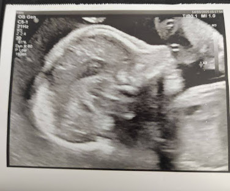
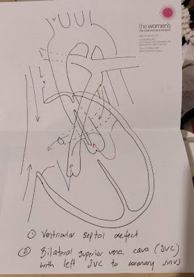

Лея: Когда любовь огромна, а нежность бесконечна
Есть многое на свете, друг Горацио,
что не подвластно нашим мудрецам.

Познакомьтесь, это Лея. Она родилась с полной формой Трисомии 18, известной как синдром Эдвардса, хромосомной аномалией, встречающейся в 1 из 5,000 беременностей. 85-90% зародышей с таким синдромом не доживают до родов, а большинство оставшихся погибают в первые часы/дни/недели после них. Всего 5 процентов доживают до года, но остаются глубокими олигофренами. Лея своей жизнью словно бы бросила вызов этому диагнозу.
Здесь нам бы хотелось поделиться историей Леи. Историей бесконечной любви, внимания, и нежности. Вся её жизнь — чудо и какое-то невероятное стечение обстоятельств.
Часть 1. Подарок
4 октября 2024 года мне исполнилось 40 лет, и, спустя две недели, словно бы подарком на этот день я узнала, что беременна. Поскольку в таком возрасте заводить детей — дело рискованное, мы с Андреасом (мужем) решили подождать, прежде, чем разглашать эту новость. Да даже я сама первые несколько месяцев не могла её как-то по-настоящему осознать. Мы продолжали работать, старший сын заканчивал 5-й класс, мы с ним готовили выступление на фестиваль языков, планируя рождественский отпуск. Шло время, в голове вертелись мысли, что неплохо бы сделать генетический тест: я в этом смысле алармист, со старшим я прошла всевозможные анализы, чтобы убедиться, что все хорошо. Обычно те, кому за 35, переживают из-за повышенных рисков синдрома Дауна, я тоже не была исключением. Рациональное во мне говорило, что нужно пройти тест, но сердцем мне сильно не хотелось, и я оттягивала этот момент, ссылаясь на работу и переезды. Недели шли, беременность была легкой, чувствовала я себя отлично: каталась на велосипеде, активно работала, выступала, путешествовала. На Рождество и Новый Год мы слетали в Китай и к родным в Россию, я там вдоволь накаталась на коньках(!) и лыжах. Будучи в России, я все-таки решила, что, хоть и поздно уже, но тест сделать надо, и дошла до женской клиники. Но, тут судьба распорядилась иначе: мне сказали, что у них очередь на полтора месяца вперед, прийти через пару месяцев. Шел уже январь, и нам нужно было возвращаться, поскольку у меня начиналось преподавание летнего семестра, а у сына — школа. «Ну, се ля ви, — подумала я, — чувствую я себя отлично, выкидышей/абортов у меня раньше не было, наверное, всё хорошо». Сейчас думается, что хорошо, что я не узнала этот диагноз на ранних сроках, даже представить не могу, какой бы выбор я сделала. И не хотелось бы стоять вообще перед таким сложным выбором.
Часть 2. Пазл
Прошел февраль, я закончила преподавать летний курс. Уже начались толчки в животе, и сам живот стал более заметным. Мы решили порадовать старшего, что у него скоро будет братик или сестричка. Вопреки нашим ожиданиям, старший отреагировал на эту новость слезами и плачем в течение 3-х дней. “Я не хочу никаких перемен, пусть все останется, как есть”, – рыдал он. Для меня эта реакция была совсем-совсем неожиданной. В течение нескольких недель мы пытались его убедить, как здорово иметь брата или сестру, но это мало работало. Постепенно мы перестали касаться этой темы вообще. На сроке 24 недели я наконец-то встала на учет. Конечно, первое, что я услышала — это “Вам же 40! Почему вы только сейчас пришли? Вы осознаете риски?”. Дальше – опрос по списку: были ли у вас родственники с синдромом Дауна, были ли выкидыши, ну и тп. Меня сразу записали в категорию высокого риска, и отправили на УЗИ.
УЗИ ~26 недель делали 1.5 часа (!), снимали детально каждую часть тела и делали замеры. Нас обрадовали, что будет девочка, но по замерам получилось, что она на 2 недели меньше, чем должна быть согласно дате последней менструации. Еще обнаружилось, что с сердцем не совсем все понятно, хоть и работает отлично, и нам назначили повторный УЗИ через 3 недели, уже с кардиологом. Между тем, мы сохраняли оптимизм, и старались вести себя также, как если б это была нормальная беременность. Хотя, надо сказать, где-то в это время меня начала посещать навязчивая мысль записаться на курсы медсестер, я даже не знаю, откуда она вдруг ко мне пришла, если честно. Может, Леечка мне ее навеяла каким-то образом.
Повторный УЗИ тоже шел около одного часа. По итогам мне сказали, что у сердца есть особенность: bilateral superior vena cava (двусторонняя верхняя полая вена). Обычно у зародыша зве вены идут в сердце, потом одна становится доминантной, у нас их две активных осталось. Эта особенность есть у 5% населения, с ней живут. Еще они увидели ventricular septal defect (дефект межжелудочковой перегородки), то есть перегородка между правым и левым предсердием не закрылась (она умеренного размера; бывают малого и большого. Малого почти все закрываются, а большого могут потребовать хирургического вмешательства). Д-р Хатчинсон, наш кардиолог, пригласил меня в небольшую комнатку, сел напротив, и схематично нарисовал и объяснил проблему (см. слева). Сказал, что нужно быть готовым, что придется делать операцию на открытом сердце. Такие операции сложные, и младенцы могут их не пережить. Я сидела, и мне не верилось, что это происходит со мной. Я вышла, дошла до дома, и разрыдалась.
На УЗИ еще сказали, что в заднем отделе мозга есть небольшая киста кармана Блейка (небольшое скопление жидкости в области мозжечка), поэтому меня направили на МРТ 10 июня. На нем обнаружили, что мозолистое тело, часть мозга, которая соединяет полушария, более тонкое, чем норма (обычно это коррелирует с аутизмом).
<Здесь мне бы хотелось сделать небольшое отступление, чтобы описать два события, которые в ретроспективе кажутся важными. Это внезапный уход двух невероятно близких по духу онлайн знакомых, еще со времен ЖЖ (livejournal). 26 мая ушла Лена Косилова, философ, преподаватель МГУ и человек необыкновенной глубины мысли и теплоты. Одинокая, с головой погруженная в философию, она напоминала ту самую Гипатию. Она как раз дописала книгу "Бессилие (Powerlessness)" о ценности отказа от властного отношения к миру, от самой воли к власти. Простыла во время майских заморозков, почти сразу слегла с пневмонией, и ушла от нас в считанные дни. Нам тогда показалось, словно бы в отказе сопротивляться вирусам она воплотила это самое бессилие. Буквально через неделю, 2 июня, скоропостижно скончался Давид Эйдельман, израильский историк, публицист, человек безгранично эрудированный и талантливый. 20 лет он жил как бы на грани из-за проблем с сердцем. Как затем писала его жена Инна, он недавно перенес операцию и восстанавливался. Очень хотел жить. Ради Инны и Шая, его младшего сына.>
За неделю до МРТ, 3 июня, меня пригласили на встречу с генетиками. Я старалась держать себя в руках и настраиваться оптимистично, но словами не передать то волнение, которое просто съедало меня изнутри. Почему-то более всего думалось только, чтоб не было синдрома Дауна. Джордж, один из генетиков, сказал: “Она будет выглядеть внешне нормальной, не беспокойтесь. Но, вы понимаете, у нее есть несколько особенностей в разных частях организма, и это наводит на мысль, что они не независимы. С каждой из этих особенностей в отдельности люди могут жить. Скорее всего, у них есть одна причина, о которой мы пока еще не знаем. Мы можем сложить этот пазл, сделав прокол пузыря и генетический анализ. Это может вызвать преждевременные роды. Можем сделать прерывание беременности. Или мы можем дождаться родов и сделать анализ потом”. На таких сроках я уже точно не была готова прерывать беременность. Я чувствовала толчки, её икоту (она регулярно икала по вечерам), мы с ней говорили и уже были лучшими друзьями, и выбирали ей имя (между Сашей, Мирой, и Леей). Я подумала: “Несмотря на все это, её сердце отлично стучит, она же живет! Значит, пусть живет! Жила б я несколькими десятилетиями раньше, я бы даже не знала, что что-то не так! Разве что она икает несколько чаще, чем обычно”.
Тем временем, по результатам УЗИ её рост существенно замедлился и отставал от ожидаемого. Кроме того, она не переворачивалась (была ножками вперед), и мы обсуждали, нужно ли ее пытаться перевернуть и рожать без кесарева. После консультации с генетиками и другими специалистами, решили, что самое безопасное для нее – это сделать мне плановое кесарево. Назначили дату на самое начало 38 недели (18 июня. Кстати, ровно в этот день в 2019 году мне была присвоена степень PhD!). 11 июня к нам прилетела моя мама, чтобы помочь. Мне стало намного легче, поскольку хотя бы можно было не переживать за старшего.
Часть 3. Роды
18 июня мы прибыли в Royal Women’s Hospital. Пока ждали на ресепшене, меня записали на исследование улучшенной накладки на шов (затем оказалось, что я была в контрольной группе). В назначенное время меня переодели, измерили давление, и отправили на операцию. Когда зашла в операционную, меня попросили сесть на операционный стол и согнуться, обхватив руками колени. Затем мне ввели анестезию, аккуратно положили, и натянили ширму. Справа от меня встал анестезиолог, взял меня за руку, и начал расспрашивать о работе и делах (видимо, чтоб отвлечь). Параллельно проверяли, как и где уже началв действовать анестезия. Я постепенно ощущала, как часть тела становится ватной и теплой, совсем как на прошлых родах с эпидуралкой. Кажется, словно становишься какой-то бесформенной массой. Где-то в момент, когда я рассказывала что-то про языковые модели, ИИ, и куда все это идет, позвали Андреаса, он зашел и стал держать меня за левую руку. В какой-то момент я почувствовала копошение в нижней части тела, и… вдруг, так быстро и неожиданно достали и показали нашу девочку (вся операция, включая зашивание, занимает минут 25-30)! Когда её нам показали, её ручка была поднята вверх и сжата в кулачок. Она словно бы говорила нам: "¡No Pasarán!". При первом же взгляде на нее не возникло никаких сомнений, что именно она --- Лея. Было 2:04 дня.

[Далее эту часть можно пропустить, она будет интересна только тем, кто хочет понять общее состояние и первые ощущения после кесарева сечения. ]
Затем все засуетились. Видимо, у нее возникли трудности с дыханием. Ей надели маску, кто-то куда-то побежал, симпатичный молодой врач, которые как две капли воды был похож на нашего с Андреасом общего знакомого, Костаса, стоял слева от меня, широко расставив ноги, и живо комментировал, что происходит, но я в этот момент находилась в полуосознанном состоянии и мало что воспринимала. Помню, очень сохли губы и была какая-то невероятная слабость и ощущение холода. Было приятно ощущать тепло рук и хотелось, чтобы мои ладони сжимали как можно сильнее. Меня зашили, и стали готовить к транспортировке в палату. А Леечку уже отправили в NICU, сказали, что с ней все будет в порядке. После операции меня начало трясти, как бывает, когда сильно нервничаешь, казалось, что мне очень-очень холодно. Мне дали попить теплой воды и положили на грудь грелку, а параллельно кубиком льда проверяли, где и как сходит анестезия (чувствительность). В палате меня обложили одеялами, но все равно трясло, время тянулось медленно-медленно. Напротив меня висели часы, и я смотрела, как секундная стрелка проходит один круг за другим. Меня успокаивало, что с Леечкой все в порядке. Андреас изредка ходил проверить её, а затем рассказывал, какая она прекрасная и миниатюрная (она родилась с весом 2200). Лежи на кровати, я начала пытаться пошевелить большими пальцами ног, совсем как в том знаменитом эпизоде в “Убить Билла”! Каждые 2-3 часа мне приносили сильные обезболивающие, меряли давление, меняли белье, тело начинало болеть все сильнее. До родов я где-то прочитала, что надо постараться встать на ноги или хотя бы сесть в течение первых 8–10 часов после операции, якобы это способствует лучшему заживлению, и я мысленно готовилась, что часам к 11 вечера я попробую приподняться. Если честно, около 7 вечера я даже чуть-чуть сменить позу тела еще не могла. Ночью мне предложили посмотреть на Леечку, и я согласилась. Это была первая попытка как-то подняться с кровати. Мне привезли инвалидное кресло, я кое-как, с огромным усилием и после нескольких обезболивающих препаратов, при поддержке Андреаса и медсестры переместилась на коляску. Было очень больно, особенно когда напрягались мышцы в области разреза. Около 3 ночи я впервые после родов увидела Леечку. Она спала в инкубаторе, а я сидела рядом в инвалидной коляске и гладила ее через маленькое окошко в нем. Мое сердце тогда наполнилось какой-то бесконечной нежностью, теплом, и любовью.
В течение следующего дня я старалась как можно чаще преодолевать боль и вставать, чтобы навещать Леечку. Боль понемногу уходила, и мне стали давать меньше медикаментов. Самыми болезненными моментами были те, что требовали смены положения и напряжения мышц в области шва. Особенно боязно было ходить в туалет первые разы (ну, это после любых родов почти всегда самый волнующий момент после встречи с малышом). У меня отслеживали количество выпитого и затем мочи, чтобы проверить, что мочевой пузырь хорошо функционирует (после родов не ощущаешь желания сходить в туалет, даже при полном мочевом пузыре). Параллельно с этим, в первые же часы после родов пришло молозиво и процесс кормления, пусть и не напрямую, а через зонд, был почти что налажен. На третий день, когда по-черепашьи передвигалась туда-сюда между нашей и Леечкиной палатами, меня уже решили выписать. Сказали, что я уже восстановилась, поэтому нужно освобождать пространство для других нуждающихся. Леечку на второй или третий день после рождения тоже сняли с глюкозы и искусственного дыхания, она лежала уже только с зондом для подачи питания.